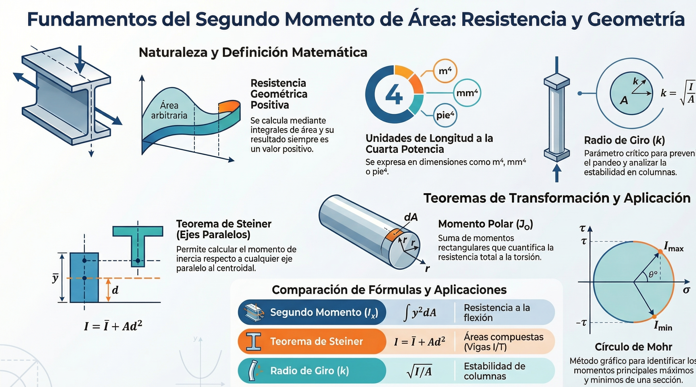
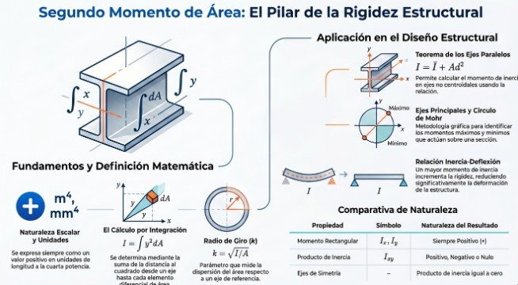
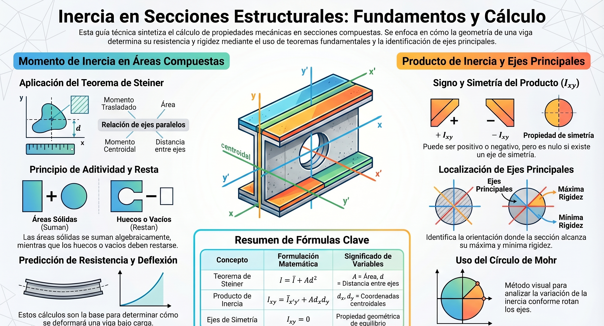

Unidad 5: Momento de inercia
Inercia de áreas, ejes paralelos, radio de giro y propiedades para secciones compuestas.
Contenido de la unidad
5.1 Conceptos generales
El momento de inercia de un área es una medida de cómo se “distribuye” la geometría respecto a un eje. Se usa para analizar deformaciones y tensiones en flexión, así como para describir la resistencia relativa de una sección.
El momento de inercia es una propiedad geométrica y física fundamental en la ingeniería que se utiliza para analizar la resistencia de un cuerpo o área a la rotación o deformación bajo cargas específicas.
A continuación se presentan los conceptos generales divididos en áreas y masa:
1. Momento de Inercia para Áreas
Este concepto surge frecuentemente cuando se analizan cargas distribuidas que actúan perpendicularmente a una superficie, como la presión de un fluido sobre una placa, donde la intensidad de la carga varía linealmente.
-
Definiciones Rectangulares: Se definen mediante integrales sobre toda el área (A). Para los ejes x y y, las fórmulas son:
Ix = ∫ y² dAIy = ∫ x² dA
Dado que involucran una distancia al cuadrado por un área, estos valores siempre son positivos y sus unidades son de longitud a la cuarta potencia (m⁴, mm⁴, pie⁴).
- Momento de Inercia Polar (JO): Representa el momento de inercia con respecto al origen o un eje perpendicular al plano. Se calcula como la suma de los momentos rectangulares (JO = Ix + Iy).
- Radio de Giro (k): Es una medida de la distribución del área con respecto a un eje. Se utiliza comúnmente en el diseño estructural de columnas y se calcula como k = √(I/A).
2. Teoremas y Herramientas de Cálculo
- Teorema de los Ejes Paralelos (Teorema de Steiner): Permite calcular el momento de inercia respecto a cualquier eje paralelo a un eje que pase por el centroide (C) del área. La fórmula es I = Ī + A d², donde d es la distancia perpendicular entre los ejes.
- Áreas Compuestas: Si un área está formada por formas simples (rectángulos, círculos, triángulos), su momento de inercia total es la suma de los momentos de cada parte con respecto al mismo eje.
- Producto de Inercia (Ixy): Se define como Ixy = ∫ x y dA. A diferencia del momento de inercia, puede ser positivo, negativo o cero. Si el área posee un eje de simetría, su producto de inercia con respecto a ese eje es cero.
- Momentos Principales y Círculo de Mohr: Para cualquier área existen ejes principales donde el momento de inercia es máximo o mínimo y el producto de inercia es cero. El Círculo de Mohr es una solución gráfica utilizada para encontrar estos valores.
3. Momento de Inercia de Masa
En dinámica, el momento de inercia de masa es una medida de la resistencia de un cuerpo a la aceleración angular.
- Definición: Se calcula mediante la integral I = ∫ r² dm, donde r es la distancia perpendicular desde el eje hasta el elemento de masa dm.
- Unidades: Se expresa comúnmente en kg·m² o slug·pie².
- Teorema de los Ejes Paralelos para Masa: Similar al de áreas, se expresa como I = IG + m d², donde IG es el momento de inercia respecto al eje que pasa por el centro de masa.
Este conjunto de propiedades es esencial para calcular esfuerzos y deformaciones en vigas, columnas y diversos elementos estructurales.

5.2 Momento de inercia de un área por integración
El momento de inercia, técnicamente referido como el segundo momento de área, constituye una propiedad geométrica crítica en la ingeniería estructural para el análisis de la resistencia y estabilidad de elementos como vigas y columnas. Esta propiedad cuantifica la distribución de un área respecto a un eje específico, determinando la capacidad de una sección transversal para resistir cargas de flexión.
A continuación, se describen sus fundamentos técnicos bajo un estándar profesional:
1. Definición matemática y naturaleza escalar
El cálculo del momento de inercia se realiza mediante la integración de la distancia al cuadrado desde un eje de referencia hasta un elemento diferencial de área (dA).
- Momentos rectangulares: Para los ejes coordenados en el plano, las expresiones son Ix = ∫ y² dA e Iy = ∫ x² dA.
- Signo y unidades: Debido a que el brazo de momento se eleva al cuadrado, el resultado es estrictamente positivo y se expresa en unidades de longitud a la cuarta potencia, como m4 o mm4.
- Radio de giro (k): Es un parámetro derivado que se define como k = √(I/A), proporcionando una medida de la dispersión del área respecto al eje de referencia.
2. Teoremas de transformación y secciones compuestas
- Teorema de los ejes paralelos (teorema de Steiner): Este principio permite determinar el momento de inercia respecto a cualquier eje paralelo a un eje centroidal conocido mediante la relación I = Ī + A·d², donde d es la distancia perpendicular entre ambos ejes.
- Análisis de áreas compuestas: En la práctica profesional, las secciones transversales complejas se dividen en formas geométricas simples; el momento de inercia total es la suma algebraica de los momentos de sus partes componentes, restando el valor de áreas vacías o agujeros si los hubiera.
3. Producto de inercia y estados principales
- Producto de inercia (Ixy): Se define como Ixy = ∫ x·y dA y, a diferencia de los momentos rectangulares, puede ser positivo, negativo o nulo. Si un área posee un eje de simetría, el producto de inercia respecto a ese eje es cero.
- Ejes principales y círculo de Mohr: Para cualquier sección, existen ejes específicos donde los momentos de inercia alcanzan sus valores máximo y mínimo (momentos principales). El círculo de Mohr se emplea como una metodología gráfica eficaz para identificar estos valores y la orientación de sus ejes correspondientes.
4. Importancia en el diseño estructural
Esta propiedad es la base para entender y resolver problemas de resistencia de materiales. El momento de inercia influye directamente en la rigidez de los elementos; cuanto mayor sea su valor respecto al eje de carga, menor será la deflexión experimentada por la estructura.

5.3 Teorema de ejes paralelos
El momento de inercia, técnicamente definido como el segundo momento de área, constituye una propiedad geométrica y física fundamental en la ingeniería para el análisis de la resistencia, rigidez y estabilidad de elementos estructurales y mecánicos [2.444, 2.445]. A continuación, se detallan sus fundamentos técnicos desde una perspectiva profesional:
1. Fundamentos matemáticos y naturaleza del área
El momento de inercia cuantifica la distribución del área de una sección transversal con respecto a un eje específico [2.445].
-
Definiciones rectangulares: Se calculan mediante la integración de la distancia al cuadrado de elementos diferenciales de área (dA) respecto a los ejes coordenados:
- Ix = ∫ y² dA [2.446].
- Iy = ∫ x² dA [2.446].
- Propiedades escalares: Dado que el brazo de momento se eleva al cuadrado, estos valores son estrictamente positivos y se expresan en unidades de longitud a la cuarta potencia (m4, mm4, pie4, pulg4) [2.446, 2.448].
- Momento de inercia polar (JO): Representa la resistencia de una sección a la torsión o rotación sobre un eje perpendicular al plano. Se define como la suma de los momentos rectangulares: JO = Ix + Iy = ∫ r² dA [2.446].
2. Teoremas de transformación y radio de giro
- Teorema de los ejes paralelos (teorema de Steiner): Es indispensable para determinar el momento de inercia respecto a cualquier eje que sea paralelo a un eje que pase por el centroide (C) del área. La relación matemática es I = Ī + A·d², donde Ī es el momento centroidal y d es la distancia perpendicular entre los ejes [2.451].
- Análisis de áreas compuestas: En la práctica profesional, las secciones estructurales (como vigas en I o canales) se dividen en formas geométricas simples. El momento total es la suma algebraica de los momentos de cada componente referidos al mismo eje de referencia [2.451].
- Radio de giro (k): Es una medida de la dispersión del área respecto al eje, esencial en el diseño de columnas para prevenir el pandeo. Se define como k = √(I/A) [2.445].
3. Producto de inercia y estados principales
- Producto de inercia (Ixy): Se define como Ixy = ∫ x·y dA y es necesario para localizar los ejes donde la inercia es máxima o mínima [2.458]. A diferencia de los momentos rectangulares, puede ser positivo, negativo o cero; si el área posee un eje de simetría, su producto de inercia respecto a ese eje es nulo [2.459].
- Momentos principales y círculo de Mohr: Para cualquier sección, existen ejes principales donde el momento de inercia alcanza sus valores extremos y el producto de inercia es cero. El círculo de Mohr se utiliza como una metodología gráfica para identificar estos valores y la orientación de sus ejes correspondientes [2.460, 2.478].
5.4 Radio de giro
El radio de giro es una propiedad geométrica y mecánica fundamental en el análisis de estructuras y cuerpos rígidos, que describe la distribución de los elementos de un área o de una masa con respecto a un eje específico.
A continuación, se presenta una síntesis técnica y profesional basada en las fuentes proporcionadas:
1. Definición y concepto
Desde una perspectiva analítica, el radio de giro (k) se define como la distancia desde un eje en la cual se podría concentrar idealmente toda el área (o masa) de un cuerpo de modo que el momento de inercia resultante sea idéntico al del cuerpo original [Hibbeler 12 Ed.]. Esta magnitud posee dimensiones de longitud y es un indicador directo de la «dispersión» del cuerpo respecto al eje de referencia [Hibbeler 12 Ed.].
2. Formulación matemática
El cálculo del radio de giro depende directamente del momento de inercia (I) y de la magnitud total de la propiedad distribuida (área A o masa m):
-
Para un área superficial:
- Respecto al eje x: kx = √(Ix / A) [Hibbeler 12 Ed.]
- Respecto al eje y: ky = √(Iy / A) [Hibbeler 12 Ed.]
- Radio de giro polar: kz = √(JO / A), donde JO es el momento de inercia polar [Hibbeler 12 Ed.].
-
Para una masa:
- La relación se expresa como I = m·k², lo que resulta en k = √(I / m) [Hibbeler 12 Ed.].
3. Aplicaciones en la ingeniería
El radio de giro es un parámetro crítico en el diseño estructural, particularmente en el estudio de elementos sometidos a compresión, como las columnas [Hibbeler 12 Ed.]. Su principal utilidad reside en:
- Cálculo de la esbeltez: Permite determinar la susceptibilidad de un elemento al pandeo (buckling), ya que una sección con un radio de giro pequeño es más propensa a deformarse lateralmente bajo cargas axiales [398, Hibbeler 12 Ed.].
- Optimización de secciones: Ayuda a los ingenieros a seleccionar perfiles que distribuyan el material de manera eficiente para maximizar la resistencia con el menor peso posible.
- Dinámica de rotación: En el caso de inercia de masa, cuantifica la resistencia de un objeto a cambiar su estado de rotación angular [Hibbeler 12 Ed.].
4. Relación con el teorema de Steiner
El cálculo del radio de giro a menudo requiere el uso del teorema de los ejes paralelos (o teorema de Steiner) para trasladar los momentos de inercia desde ejes centroidales hacia ejes de referencia específicos, facilitando el análisis de secciones compuestas.
5.5 Momento de inercia de un área compuesta
A continuación se presenta un resumen técnico y profesional sobre el cálculo del momento de inercia para áreas compuestas, basado en los principios de la mecánica clásica y la estática.
Definición de área compuesta
En ingeniería, es común encontrar secciones transversales complejas (como vigas en I, T o canales) que no corresponden a una sola forma geométrica básica. Un área compuesta consiste en una serie de formas «más simples» conectadas entre sí, tales como rectángulos, triángulos y círculos.
Principio de aditividad
El principio fundamental establece que el momento de inercia de un área compuesta con respecto a un eje de referencia específico es igual a la suma algebraica de los momentos de inercia de cada una de sus partes componentes calculados con respecto a ese mismo eje.
En los casos donde la figura contenga espacios vacíos o «agujeros», el momento de inercia de dichas partes debe restarse del total de la figura principal.
Aplicación del teorema de los ejes paralelos (teorema de Steiner)
Este teorema es una herramienta indispensable cuando el eje centroidal de una de las partes componentes no coincide con el eje de referencia deseado para el área total. El teorema establece la siguiente relación:
I = Ī + A·d²
Donde:
- Ī es el momento de inercia de la parte respecto a su propio eje centroidal (generalmente obtenido de tablas de propiedades geométricas).
- A es el área de la forma componente.
- d es la distancia perpendicular entre el eje centroidal de la parte y el eje de referencia del sistema.
Procedimiento sistemático para el análisis
Para determinar de manera precisa esta propiedad mecánica, se recomienda seguir los siguientes pasos:
- División de la sección: Se fragmenta el área total en un número finito de formas geométricas estándar (rectángulos, triángulos, etc.).
- Localización de centroides: Se identifica la distancia perpendicular desde el centroide de cada sub-área hasta el eje de referencia común.
- Cálculo individual: Se determina el momento de inercia de cada parte respecto al eje de referencia. Si los ejes no coinciden, se aplica obligatoriamente el teorema de los ejes paralelos.
- Consolidación de resultados: Se realiza la suma algebraica de todos los valores obtenidos, asegurándose de restar los momentos de inercia correspondientes a los huecos o secciones removidas.
Este cálculo es crítico en el diseño estructural, ya que el momento de inercia de la sección transversal de elementos como vigas o columnas determina directamente su capacidad para resistir cargas de flexión y deformaciones.
5.6 Producto de inercia de un área
A continuación se presenta una síntesis técnico-profesional sobre las propiedades mecánicas de las secciones transversales, específicamente el momento de inercia de áreas compuestas y el producto de inercia, conforme a los principios de la estática y la mecánica estructural.
1. Momento de inercia de áreas compuestas
El cálculo del momento de inercia para secciones complejas (como vigas en I, T o canales) es fundamental para predecir la resistencia y deflexión de elementos estructurales.
- Principio de aditividad: El momento de inercia de un área compuesta con respecto a un eje de referencia común es igual a la suma algebraica de los momentos de inercia de cada una de sus partes integrantes.
- Tratamiento de agujeros: En caso de que la sección presente vacíos o «agujeros», el momento de inercia de dicha cavidad debe restarse del valor total de la figura base.
- Teorema de los ejes paralelos (teorema de Steiner): Es la herramienta esencial para este análisis y establece que el momento de inercia respecto a un eje paralelo al centroidal es I = Ī + A·d², donde Ī es el momento respecto al eje centroidal de la parte, A su área y d la distancia perpendicular entre los ejes.
2. Producto de inercia de un área
El producto de inercia es una propiedad geométrica necesaria para identificar la orientación de los ejes principales de una sección, donde los momentos de inercia alcanzan sus valores máximo y mínimo.
- Definición matemática: Se define para un área A con respecto a los ejes x e y mediante la integral Ixy = ∫ x·y dA.
- Propiedades de signo y simetría: A diferencia del momento de inercia (que siempre es positivo), el producto de inercia puede ser positivo, negativo o cero. Si uno de los ejes coordenados es un eje de simetría para el área, el producto de inercia es automáticamente nulo.
- Teorema de los ejes paralelos para el producto de inercia: Se expresa como Ixy = Īx′y′ + A·dx·dy. En esta formulación, es imperativo respetar los signos algebraicos de las coordenadas centroidales (dx, dy) de cada parte.
3. Aplicación en ingeniería y ejes principales
El análisis conjunto del momento y el producto de inercia permite determinar los momentos principales de inercia, los cuales son vitales para el diseño seguro de columnas y vigas sometidas a flexión asimétrica. Mediante métodos como el círculo de Mohr, los ingenieros pueden visualizar la variación del momento de inercia conforme los ejes rotan, asegurando que la estructura se oriente de manera que maximice su rigidez ante las cargas aplicadas.
